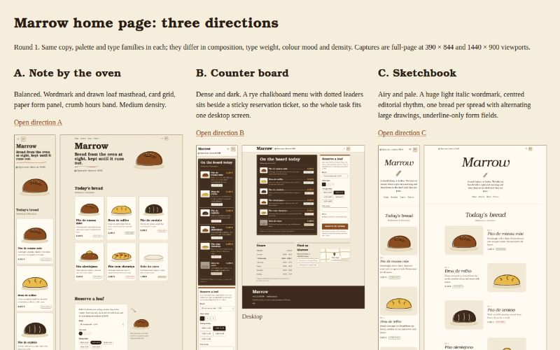

Inputs
- Brief
- A one-page site for Marrow, a Lisbon bakery. Visitors see today's bread, opening hours, a map, and can reserve a loaf for pickup by name and phone. Warm, handmade, no stock photos.
- Slug
- forge-test-marrow
- Ask me to pick a design
- no
Starred outputs
Directions · directionsdir
a, b and c folders with index.html, styles.css, tokens.css and screenshots; index.html compares them
Questions and answers
No stage asked the user a question.
Other outputs
- Intake · intake.md 7.4KB
- Intake · run-settings.json 176B
- Visual design · design-language.md 17KB
- Front-end performance · perf-budget.md 25KB
- Back end and data · backend-notes.md 26KB
- Threat model · threats.md 39KB
- Deployment playbooks · playbook-cloudflare.md 15KB
- Deployment playbooks · playbook-railway.md 20KB
- Architect · decision.md 13KB
- Architect · architecture.md 33KB
- Architect · acceptance.md 21KB
- Architect · target.txt 11B
- Directions · directions-note.md 7.1KB
- Ask the user · choice.md (absent)
- Ask the user · feedback.md (absent)
- Judge the directions · choice.md 1.9KB
- Judge the directions · feedback.md 5.7KB
- Plan the feature · plan-report.md 5.0KB
- Scaffold · scaffold-report.md (absent)
- Implement · build-report.md (absent)
- Test runner · test-results.md (absent)
- Test runner · screenshots.dir (absent)
- Security review · security-findings.md (absent)
- Performance review · perf-results.md (absent)
- Code review · code-findings.md (absent)
- Critic · scores.json (absent)
- Critic · fixes.md (absent)
- Critic · verdict.md (absent)
- Publish to GitHub · publish-report.md (absent)
- Deploy to Cloudflare · deploy-report.md (absent)
- Deploy to Railway · deploy-report.md (absent)
- Live checks · live-results.md (absent)
- Live checks · live-screenshots.dir (absent)
- Desktop look · desktop-look.md (absent)
- Desktop look · desktop-screenshot.png (absent)
- Handoff · overview.md (absent)
- Handoff · runbook.md (absent)
| Stage | Group | Status | Model | Duration | Tokens |
|---|---|---|---|---|---|
| Intake | intake | done | opus | 54 s | 164K |
| Visual design | research | done | sonnet | 2 min 14 s | 285K |
| Front-end performance | research | done | sonnet | 2 min 44 s | 276K |
| Back end and data | research | done | sonnet | 2 min 15 s | 287K |
| Threat model | research | done | opus | 6 min 55 s | 616K |
| Deployment playbooks | research | done | sonnet | 3 min 23 s | 1.5M |
| Architect | architecture | done | opus | 10 min 19 s | 1.6M |
| Directions | design | done | opus | 6 min 56 s | 2.1M |
| Ask the user | pick | skipped | sonnet | 0 s | 0 |
| Judge the directions | pick | done | opus | 1 min 23 s | 395K |
| Plan the feature | plan | done | opus | 5 min 21 s | 1.8M |
| Scaffold | scaffold | stopped | opus | 9 min 43 s | 0 |
| Implement | build | waiting | opus | 0 | |
| Test runner | check | waiting | sonnet | 0 | |
| Security review | check | waiting | opus | 0 | |
| Performance review | check | waiting | sonnet | 0 | |
| Code review | check | waiting | sonnet | 0 | |
| Critic | critique | waiting | opus | 0 | |
| Publish to GitHub | publish | waiting | sonnet | 0 | |
| Deploy to Cloudflare | deploy | waiting | opus | 0 | |
| Deploy to Railway | deploy | waiting | opus | 0 | |
| Live checks | verify | waiting | sonnet | 0 | |
| Desktop look | verify | waiting | sonnet | 0 | |
| Handoff | handoff | waiting | sonnet | 0 |